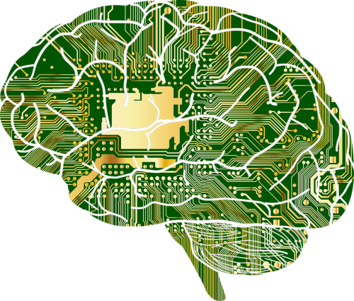

The Importance of AI Ethics
As AI systems become more powerful and pervasive, ethical considerations become increasingly important. Issues like bias, privacy, accountability, and the potential for misuse must be addressed to ensure AI benefits all of humanity.
Key Ethical Concerns
Bias and Fairness
AI systems can perpetuate or amplify biases present in their training data, leading to unfair outcomes for certain groups.
Privacy
The massive data requirements of AI systems raise concerns about personal privacy and data protection.
Accountability
When AI systems make decisions, it can be difficult to determine who is responsible for those decisions.
Job Displacement
The automation potential of AI raises concerns about widespread job losses and economic disruption.